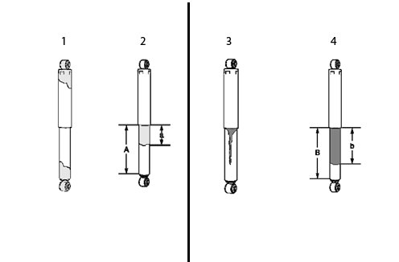
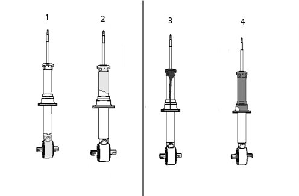
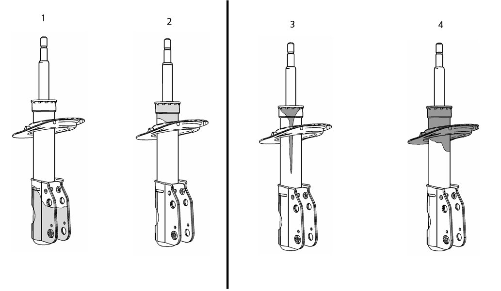

Suspension - Shock Absorber/Strut Fluid Leak Information
INFORMATIONBulletin No.: 05-03-08-002E
Date: May 31, 2012
Subject: Information on Diagnosis and Replacement of Shock Absorber and Strut Due to Fluid Leak
Models:
2013 and Prior GM Passenger Cars and Trucks
Supercede:
This bulletin is being revised to add the 2013 model year. Please discard Corporate Bulletin Number 05-03-08-002D (Section 03 - Suspension).
This bulletin is intended to help identify the severity of shock absorber and strut fluid seepage. Improper diagnosis may lead to components being replaced that are within the manufacturer's specification. Shock absorbers and strut assemblies are fluid-filled components and will normally exhibit some seepage. Seepage is defined as oil film or dust accumulation on the exterior of the shock housing. Shock absorbers and struts are not to be replaced under warranty for seepage. Use the following information to determine if the condition is normal acceptable seepage or a defective component.
Important
Electronically controlled shock absorbers (MR) may have a tendency to attract dust to this oil film. Often this film and dust can be wiped off and will not return until similar mileage is accumulated again.
Inspection Procedure
Note
The shock absorber or strut assembly DOES NOT have to be removed from the vehicle to perform the following inspection procedure.
Use the following descriptions and graphics to determine the serviceability of the component.
Shock Absorbers

Do Not Replace shock absorbers displaying condition 1 or 2 levels of seepage.
1. Oil or fluid residue only on the bottom or top of the shock absorber and not originating from the shaft seal (the upper part of the lower shock tube).
2. Light film/residue on approximately 1/3 (a) or less of the lower shock tube (A) and originating from the shaft seal.
Replace shock absorbers displaying conditions 3 and 4 levels of leaks.
3. Oil drip or trail down the lower shock tube and originating from the shaft seal.
4. An extreme wet film of oil covering more than 1/3 (b) of the lower shock tube and originating from the shaft seal.
Coil-over Shock Absorber

Do Not Replace coil-over shock absorbers displaying condition 1 or 2 levels of seepage.
1. Oil or fluid residue only on the bottom of the lower shock absorber tube or the coil-over shock absorber components and not originating from the shaft seal (located at the top of the coil-over shock tube).
2. Light film/residue on the shock absorber tube, but not on the spring seat and originating from the shaft seal.
Replace coil-over shock absorbers displaying conditions 3 and 4 levels of leaks.
3. Oil drip or trail down the lower shock tube and originating from the shaft seal.
4. An extreme, wet film of oil covering the shock absorber tube and pooling in the spring seat and originating from the shaft seal.
Struts

Do Not Replace Struts displaying condition 1 or 2 levels of seepage.
1. Oil or fluid residue only on the bottom of the strut tube or on other strut components and not originating from the shaft seal.
2. Light film/residue on the strut tube, but not on the spring seat and originating from the shaft seal.
Replace Struts displaying conditions 3 and 4 levels of leaks.
3. Oil drip or trail down the strut tube and originating from the shaft seal (located at the top of the strut tube).
4. Extreme wet film of oil covering the strut tube and pooling in the spring seat and originating from the shaft seal.
Correction
Use the information published in SI for diagnosis and repair.
Use the applicable published labor operation.

Disclaimer